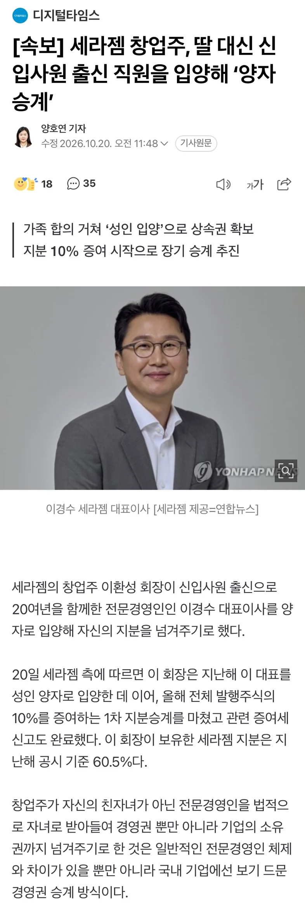

하나 있는 딸 : 기업 경영에 관심없음
신입사원에서 CEO 까지 오른 사원(혈연관계 없음) : 양자로 들여 기압승계

하나 있는 딸 : 기업 경영에 관심없음
신입사원에서 CEO 까지 오른 사원(혈연관계 없음) : 양자로 들여 기압승계
일본은 대릴사위로 들이는거고
숨겨둔 자식 아니냐
이환주 회장은 48년생으로 추정되고
이경수 대표이사는 78년생이라고 하네
pubic hair theory?
자는또낳으면
어허
1961년생인 이 회장에겐 딸이 한 명 있지만, 기업 경영에 별다른 관심이 없는 것으로 알려졌다. 이 대표는 1978년생으로 이 회장보다 17세 어리다.
이 대표는 세라젬 창업 5년 뒤인 2003년 신입사원으로 입사해 전략기획과 마케팅, 국내외 영업 등 여러 분야에서 경험을 쌓았다. 특히 세라젬이 해외 사업에 주력하던 시절 이 회장과 함께 해외 현장을 다니며 창업주의 경영 철학을 익힌 것으로 전해졌다.
https://n.news.naver.com/article/029/0003054075?sid=101
친자식이 경영에 관심이 전혀 없으니까 선택한 최후의 보루인거네 ㅋㅋㅋ
쌩판 남에게 넘기자니 내가 내쳐질거같고 아싸리 오래봐온 믿을만한사람을 내 가족으로 들여서 반만 넘긴거네 ㅋ
일본식이 이럴건데
굳이 입양으로 혈연까지 만드는 이유가 있나?
양자로 들일정도면 배신에 대한 우려도 아주 조금은 남보다 덜할거고
무엇보다도 법적으로 자식이니까 설령 큰 분쟁이 일어나도 가족간 지분 분할이 일어날뿐이지 몽땅다 빼앗진 못하니까
이거 같네...
그것도 있겠지만 양자 입적을 통한 가업승계제도 이용해서 지분방어할 목적이 더 크겠지.
혈연 관계 없는 타인에게 지분증여할때 증여세
VS
입양한 양자에게 지분 증여할때 증여세
아니 딸이 얼마나 관심이 없길래 사위도 없나?
그럼 그 직원의 실제 부모는 이제 부모가 아닌게 되는건가?
찾아보니까 일반양자 친양자 이렇게 있는데 어짜피 친양자는 미성년자만 되네 고로 일반양자이고
일반양자로 들어가면 양쪽다 부모 유지됨
친양자로 들어가면 진짜 아예 족보 갈아엎게되는거 이전 부모와 법적 연을 끊고 진짜 완전히 그쪽집안 자식되는거
가장큰 차이는 일반양자는 원래 부모에대한 상속권도 양자로 들어간 부모의 상속권도 동시에 유지되는데
친양자는 원부모에대한 상속권이 완전 소멸하고 바뀐 부모에대한 상속권만 존재함(부양의무도 마찬가지)
중소사장말고 중견이상 회장들한텐 중요한건 돈은 기본이고 사회적 타이틀이 본체임, 직접 일군 회사가 100년 200년 본인 호적 아래에서 계속 이어지길 바라는거지 뭐
어느정도 키우면 막말로 회사도 지새끼일듯 ㅋㅋㅋㅋㅋ
그럴수밖에 없음 사업체 작은거 내보기만해도 내 반쪽같은데
???: 순양은 내 자식이다!
일본은 사위도 양자로 삼잖아ㅋ
일본애들은 저런쪽으로는 혈통을 존나 중요시 여기잔어 ㅋㅋ
그럼 어떻게 결혼해?
아들딸 서로 맞교환하고 결혼하는거야?
순서가 반대임 양자로 들여서 결혼하는게 아니라 결혼 시켜서 양자로 들이는거
그거 옛날 풍습일걸.
2차대전 이전에는 아내는 법적으로 무조건 남편성을 따라야했음.
그래서 소위'명문가' 중 딸만 있는 집안이 취한 방법이 서양자(사위양자)인데 별거 없음.
양자로 취한 자식은 친자식이랑 결혼이 가능하다는 법은 또 있어서 사위를 양자로 취하고 딸이랑 결혼시키면 내 성을 가진 사위가 내 딸이랑 결혼했으니 내 성(가문)이 그대로 이어지는거임.
근데 2차대전 끝나고는 남편/아내 성 둘 중 하나 선택가능하게 법이 바뀌어서 저런 집안들은 이제 굳이 양자로 안들이고 아내 성을 취하게 하는 거고 이게 한국에 번역될때 '데릴사위'라는 식으로 번역되는 거임.
오빠 우리 피가 이어진 남매가 아니래...
존나 똑똑하고 믿을만한가보네
왕조야?
일본에선 데릴사위로 쓸만한 애를 데려와서 승계하는 경우가 많음. 야마모리라던가 히다치라던가 등등 특히 나고야라던가 오사카등 도쿄외의 지역유지들이 운영하는 큰 기업들이 이렇게들 많이해.
전에 거래처에서 데릴사위로 오는 조건으로 반드시 사장시켜달라는 얘 데려왔는데 사장 남동생하고 마찰일어나서 회사 터질뻔한 적 있음 ㅋㅋ 진짜 지랄들하고 앉았네 싶더라
성씨가 이씨인 게 승계에 도움이 되었을까?
이거 얼마 전에 슈카월드에서 본 건데 우리나라에서도 이걸 하는 사람이 있네ㅋㅋㅋ
창업자 입장에선 회사도 자기 자식임
드라마 스토리 뚝딱 나온다
이거 일본이 이렇게 한다고 슈카에서 봤어
어차피 손자로 승계되는건 맡긴해 ㅋㅋ
아버지를 아버지라 부르지못하고..
딸이랑 결혼시킨다는 선택지는 없는건가?
딸이 경영에 관심도 없고 결혼했다면 사위에게 경영넘겨볼 생각도할텐대...
안그런거보니 상횡이 좀 복잡한듯
진짜 성공신화 ㄷ ㄷ
뭔가 낭만이 있다 ...
회사를 위한 선택을 한거 같네. 자기 죽으면 전문경영인이 힘을 못 쓰니까 밀어준걸로 보인다.
경영은 관심없어도, 지분은 내꺼 운영은 이경수가 이 지랄을 안하네?
가업승계 세제혜택을 기대하고 양자로 들인건가 하고 봤더니 중견기업 기준 매출액 5,000억 원을 초과해서 그 대상도 아니네 ;;; 그냥 정말 장기적인 기업 운영을 위한 선택인 것 같네
이거 일본이 이렇게많이한다더라